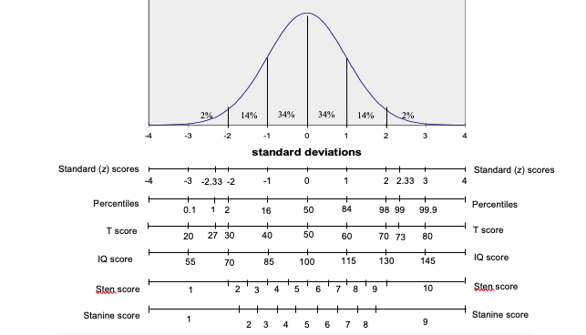
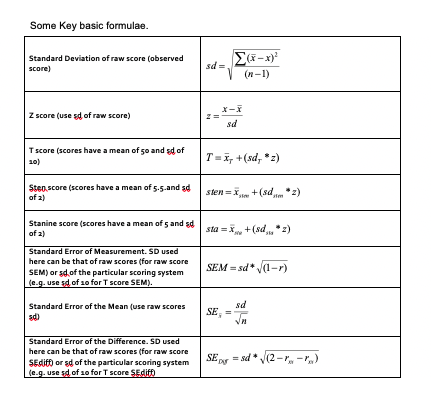

Chapter 3 The Normal Distribution and scales of Measurement

3.1 Percentiles
The above figure showed the relationship between the normal distribution curve for a set of scores in a norm group and scales commonly used within tests. When giving test feedback it is most common to use the percentile scale since this is most readily understood e.g. you have scored higher than X% of the comparison group. One problem with this percentile scale is that it exaggerates the difference in raw scores at the middle of the distribution and minimises differences at the extremes. For example, the difference in raw scores between the 50th and 60th percentile will be much smaller than the difference in raw scores between the 80th and 90th percentile (note how the percentile change is not equal as you move up equal intervals on the horizontal axis of the normal distribution). Thus the percentile scale does not represent equal intervals between raw scores. Other scoring systems have been employed which, along with other advantages, maintain the interval relationship between the raw scores. These scales are discussed below.
3.2 Standard scores (z)
z scores are usually termed standard scores. These standard (z) scores express the difference from the mean in standard deviation units as shown below:
\[ z = \frac{(score_{raw} – mean_{norm})}{SD_{norm}}\]
By this method tests that have a normal distribution of scores, but have differing means and standard deviations, may be converted to a common comparison scale with a mean score of zero (0) and a standard deviation of one (1).
For example, a raw score that is exactly 2 standard deviations above the mean for a test gives a z score of 2. From the normal distribution curve (NDC) table we know that a z score of 2 corresponds to the 98th percentile. Furthermore, from this NDC table we know the percentile equivalent for any given z score. Thus we can meaningfully compare performance across tests so long as the test scores are normally distributed and so long as the tests involve the same norm groups. The reasons for these two conditions are given below:
Firstly, if test scores are skewed from the normal distribution then z scores derived from the above formula will also be skewed and the NDC table will no longer give accurate percentiles for the test. The standard score formula retains the relative distances between scores found in the original raw scores. For example, consider four raw scores: 55, 60, 70 and 80 for a test with a mean of 50 and a standard deviation of 10. The first two scores differ by 5 points and the last two differ by 10 points – twice the difference of the first pair. When converted to z scores these raw scores give values of: 0.5, 1.00, 2.00 and 3.00. Thus, the first two scores differ by 0.5 z scores and the last two differ by 1.00 z scores – twice the difference of the first pair. Thus the conversion of raw scores to z scores using the above formula may be described as a linear transformation i.e. where the raw score distribution shape is maintained in the standard scores. If raw scores are skewed then the corresponding linearly transformed z scores will also be skewed, and the NDC table will underestimate (if scores are positively skewed) or overestimate (if scores are negatively skewed) the actual percentile score.
Secondly, to meaningfully compare performance across tests we need to ensure that the norm groups across the test are in fact comparable e.g. it makes little sense to compare two different tests using two different norm groups. Consider comparing verbal performance using an A Level norm group with numerical performance using a first form norm group. Here, any difference in percentile for a person taking both tests could come about either as a result of a real difference in ability or as a result of norm group differences.
3.3 Normalising z scores
To address the problem of comparability across tests when test scores are skewed, some tests ‘normalise’ the z scores for the set of raw scores. This is a non-linear transformation. This can be done by first obtaining the percentile equivalent for each raw score (this can be worked out directly or found within the norm table). Next, for each percentile find the corresponding z score from within the NDC table. By this process raw scores are transformed into a normal distribution of z scores known as normalised standard scores. This process is usually considered justified when the underlying attribute being measured is believed to be normally distributed and the non-normality is considered to be a result of sampling error or error in test construction.
3.4 Standardised scores
Apart from z scores and percentiles there are a number of other scoring systems that are often collectively termed standardised scores. The relationship between these standardised scores and z scores can be simply described using the following formula:
\[ Score_{scale} = (SD_{scale} * Score_z) + Mean_{scale}\]
For example, the T scale scoring system is defined as having a mean of 50 and a standard deviation of 10. Thus, if we have a z score of -1, the corresponding T score will be:
\[T score = (10*-1) + 50\] \[= (-10) + 50\] \[= 40\]
Thus, to convert a z score to any other standard scoring scale we need to know the scale’s mean and standard deviation. These standardised scores retain the distribution of the original raw scores if the z score used in the above formula is itself a linear transformation (i.e. a non-normalised z score). In this case, such scores may be described as linear standardised scores (e.g. linear T, etc). If, however, the z score has been normalised then score may be described as a normalised standardised score (e.g. normalised T, etc).
Below are some commonly used standardised scores:
T scores have a mean of 50 and a standard deviation of 10
IQ or intelligence test scores usually have a mean of 100 and a standard deviation of 15.
Sten scores have a mean of 5.5 and a standard deviation of 2.
Stanine scores have a mean of 5 and a standard deviation of 2.
A knowledge of these scales allow us to work from raw score to standardised score or vice versa. For example, if a test has a mean raw score of 80 and a raw score standard deviation of 10, then the linear T score equivalent to a raw score of 95 may be calculated as follows:
\[ z = \frac{x-\bar{x}}{sd} = \frac{95-80}{10} = 1.5 \]
\[ T = \bar{x_t}+(sd_T \times z) = T 50 + (10 \times z) = 50 + (10 \times 1.5) = 65 \]
And, if on the same test (with raw score mean of 80 and raw score SD of 10, then if a person has a linear T score of 70, then the corresponding raw score may be calculated as follows: Since \(T=\bar{x_T} + (sd_T \times z)\), therefore \(z = sd= \frac{T-\bar{X_T}}{sd_T}, z = \frac{70-50}{10}, z = 2\), ,
Then, since \(z = \frac{x-\bar{x}}{sd}\), therefore \(x = (sd \times z) + \bar{x}, x = (10 \times 2) + 80\)
So a T score of 70 here equals a raw score of 100.
